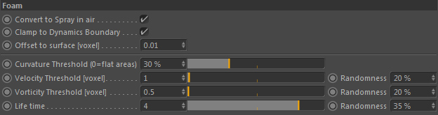
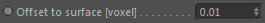
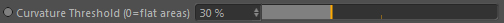
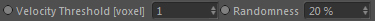
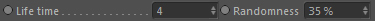

Foam

These settings define and control when and how foam particles are generated.
Convert to Spray in air
If foam particles are displaced into the air (for example because the liquid distorted in a way so they detach from the liquid surface to far away) you
can let them be converted into spray particles. Otherwise they will die.
Clamp to Dynamics Boundary
Clamps foam particle positions to the fluid dynamics container so they remain inside the fluid simulation space.
Offset to surface [voxel]

The foam particles are automatically projected onto the liquid surface but can be offset along the normal direction with this value (here the surface reconstructor or the internal volume is used).
Curvature Threshold (0=flat areas)

Defines the surface curvature where foam particles are generated. Particles are only generated in areas with a curvature higher than this value.
Velocity Threshold [voxel]

Defines the fluid speed where foam particles are generated. Particles are only generated in areas with a velocity higher than this value.
Randomness
Randomizes the velocity threshold between 0.0 and 'Velocity Threshold'.
Vorticity Threshold [voxel]
(Only available in Geometry mode)
Defines the fluid vorticity where foam particles are generated. Particles are only generated in areas with a vorticity higher than this value.
Randomness
(Only available in Geometry mode)
Randomizes the vorticity threshold between 0.0 and 'Vorticity Threshold'.
Life time

The life time of a foam particle given in seconds.
Randomness
Randomizes the Life time between 0.0 and 'Life Time'.